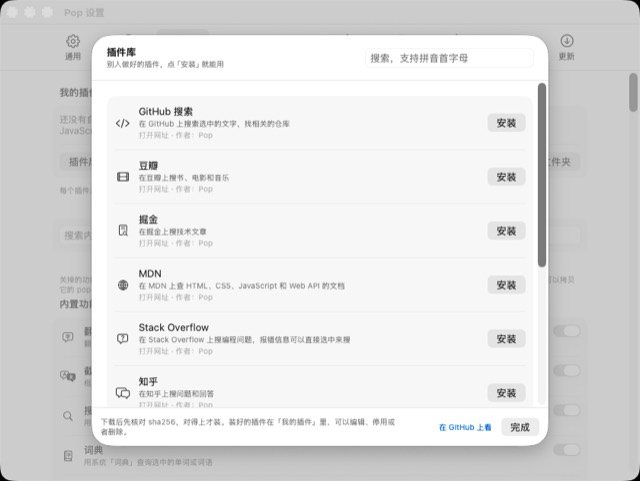

Pop
/pɒp/ — like a bubble: it pops up, you swipe, it pops.
Hold the right mouse button on anything you’ve selected. Pop translates it, converts it, or opens a ring of tools you pick with one swipe. A short click is still the normal context menu.

A right click, held a moment
Press and hold the right button for about a quarter of a second (you can change it) and Pop reads what’s selected in the app you’re using. Release early and you get the system menu as usual; drag with the right button and games or 3D apps get the drag.
- Swipe toward a slot and let go to run it; let go in the middle to close
- Or use a modifier + right click, the middle button, or a global shortcut
- Optional toolbar above a selection, off by default and excludable per app
How Pop tells a long press from a normal click. The delay is adjustable.
Translate what you select
Foreign text goes straight to a translation card. By default it uses Apple’s on-device translation — offline and free. Switch to AI or DeepL, or show them side by side.
- Replace the original text in place, or copy it
- Change the target language for one card, or read it aloud
- Save words to a vocabulary list and export it for Anki
More than 80 tools, where you want them
Arrange 4 to 12 slots, give an app its own ring, and set rules that skip the ring entirely: math is calculated, units and colors are converted, images are read with on-device OCR.
- Text: cleanup, case, encoding, word count, extract links and emails
- Developer: JSON, YAML, SQL, regex, JWT, hashes, QR codes, cron
- Files and screen: rename, convert images and video, PDF, color picker, ruler
Clipboard history, and pins on top
Pop keeps a searchable history of text, images and files — text inside images is searchable too, recognized on your Mac. Pin a screenshot, image or text above every window to compare against.
- ⌘1–⌘9 to paste, ⌘-click several items to paste them together
- Skips content that password managers mark as concealed; exclude any app
- Stored only on this Mac and cleaned up by age and count
AI with your own endpoint
Select text and ask AI to polish, summarize, explain or translate it, or ask a question. On macOS 26 with Apple Intelligence, Pop can use the built-in on-device model. Or point it at any OpenAI Chat Completions–compatible endpoint, including a model running on your Mac.
- Answers stream in; copy, replace the original or pin them
- Selected text is only sent when you use an AI feature
- Your API key stays in this Mac’s Keychain
Plugins in one JSON file
Turn a URL template, a shell script, JavaScript or a Shortcut into a tool on the ring. Or install one from the plugin library — Pop checks its SHA-256 before adding it, and shows you shell scripts before they’re installed.
pop://links and Shortcuts actions let other tools call Pop- Import and export plugins, or share the JSON file

Also inside
Screenshot OCR and translate
Draw a box on screen to read or translate the text in it, offline.
Annotate
Arrows, boxes, text, pixelation and numbered steps, with an optional backdrop and shadow.
Color picker and ruler
Pick any on-screen color and measure distances between elements.
Send to phone
Open a temporary page on your phone over the same Wi-Fi to move files both ways.
Window layout
Halves, thirds, maximize, center, or move to another display.
Keep awake and timer
Stop the Mac from sleeping for a while, or set a quick countdown.
Requirements
- macOS
- 15 Sequoia or later; Liquid Glass on macOS 26
- Mac
- Universal: Apple silicon and Intel
- Permissions
- Accessibility (required). Screen Recording only for screenshot tools.
- Language
- English or Simplified Chinese interface, following your Mac’s language (0.30.0 and later); translation works across many languages
- Download
- About 6 MB (
Pop-<version>.zip) - License
- GPL-3.0
Install and update
- Download
Pop-<version>.zipfrom the latest release and unzip it. - Drag Pop.app into Applications and double-click it. From 0.22.0 on, releases are signed with a Developer ID and notarized by Apple.
- Turn on Pop in System Settings › Privacy & Security › Accessibility. It takes effect within seconds.
- Select some English text and hold the right mouse button for about 0.25 seconds.
Pop checks GitHub Releases at launch and every 6 hours (you can turn this off, and opt out of betas). “Update Now” downloads the new version, verifies its SHA-256 checksum and code signature — it must be signed with the same certificate — then replaces Pop and relaunches. Settings, plugins and history are kept.
Questions
Is it free?
Yes. Pop is free and open source under GPL-3.0: no account, no subscription, no in-app purchases.
Why does it need Accessibility?
macOS only lets apps with Accessibility access watch mouse buttons system-wide, read the selection in other apps and paste into them. Pop needs exactly that: to notice a long right-click, read what you selected, and put results back when you choose “Replace”.
For the same reason Pop can’t be in the Mac App Store — the sandbox doesn’t allow it — so it’s distributed on GitHub and here.
Does it need Screen Recording?
Only for the tools that look at the screen: screenshot OCR and translate, QR scanning, annotation and the ruler. Everything else works without it.
Is there an English interface?
Yes. Since 0.30.0 Pop shows its interface in English unless your Mac’s language is Chinese. Translation itself works between many languages using Apple’s on-device translation, AI or DeepL.
Does Pop send my text anywhere?
Only when you ask for it: AI features send the selected text to the AI endpoint you set up, and DeepL translation sends it to DeepL. Apple’s on-device translation and model, OCR and the clipboard history stay on your Mac. See the privacy policy.
Does it sync between Macs?
You can export settings and plugins to a file in Settings › Sync and import them on another Mac. iCloud sync needs a build signed with iCloud access; the builds on GitHub don’t include it.
Right-click stopped working after an update.
Open Pop’s Settings › General and use “Clear old authorization records”, then grant Accessibility again. This mostly affected older, ad-hoc–signed builds; notarized releases keep the permission.
More help: Pop issues on GitHub · Support · Pop privacy policy